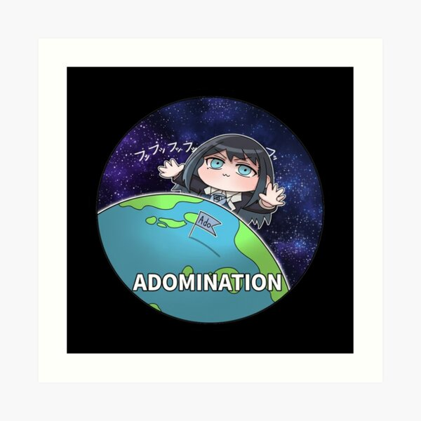

ART PRINTS / ADO UTAITE FAN ART
Ado
Chibi World Domination Art Print
A cosmic chibi tribute to Ado's 'Adomination' era—blending playful character proportions with orbital space motifs and deep electric blues.
View Art Print on Redbubble ↗Check live pricing, fabric colors, sizes and worldwide shipping options on Redbubble.
Artwork & Chando Utaite Inspiration
Inspired by the community meme and global tour energy of 'World Domination' (Adomination), this piece trades dark brooding shadows for a vibrant, star-lit chibi composition. It is crafted as a focal point for gaming desks, vinyl listening corners and anime gallery walls.
Sizing, Material & Fit Guide
Measure your wall or shelf space before selecting dimensions. Smaller prints fit neatly on bookshelf displays alongside CDs and lightsticks, while medium and large formats work best framed above a desk or studio monitor setup.
Independent Ado Fan Art by Oddloop42
Illustrated in Buenos Aires by Oddloop42 for J-pop, anime and Utaite fans worldwide. This is independent fan-made art inspired by Ado and is not official merchandise.